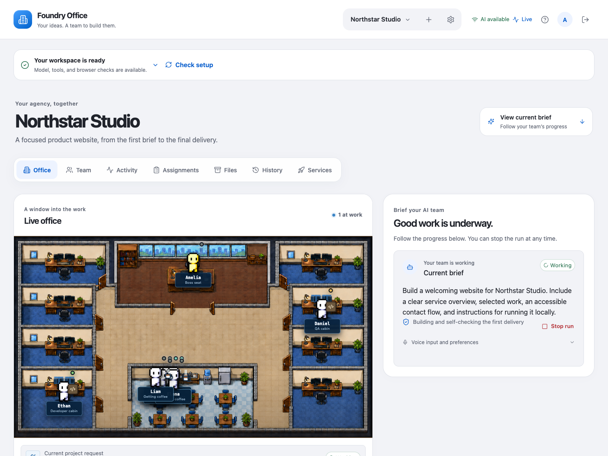

Actual interface · example project dataPUBLIC PROJECT · AGENTIC AI
Foundry Office
An AI team you can
actually see at work.
A local workspace that takes a brief through implementation, independent review, recovery, and app launch. Real files. Inspectable evidence. A visible team.
Explore the project Architecture & engineering notes